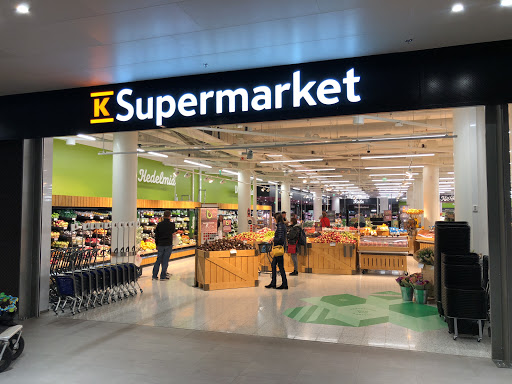

SUPERMARKET
Home
About US
Product
Contact
WELCOME
TO
NEITHAL SUPERMARKET
MANAPAD,TUTICORIN-628209
PHONE NO:6380282370,7643765427,2174863660
A supermarket is a self-service shop offering a wide variety of food, beverages and household products, organized into sections. This kind of store is larger and has a wider selection than earlier grocery stores, but is smaller and more limited in the range of merchandise than a hypermarket or big-box market.As shopping migrates online, brickand- mortar stores will need to respond, in particular by turning shopping from a transaction into a pleasurable lifestyle activity. Our publication “Retail’s Revolution” shows how physical stores will play an important role even in a world of rapidly growing online sales. However, given the convenience of online shopping, if physical stores are to survive – let alone thrive – they will need to give customers new reasons.
Ordering Details:
NAME:
MOBILE NO:
ADDRESS:
DATE:
Grocery Items:
select your item
cucumber
biscuts
greens
apple
peanut butter
bread
chocolates
drinks